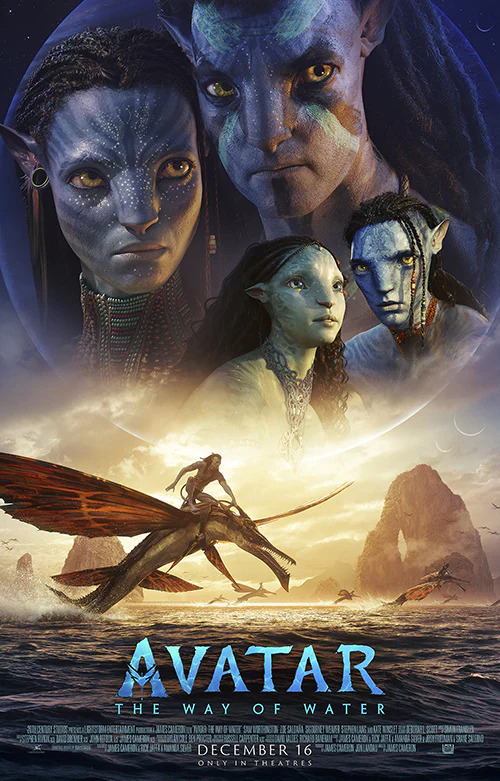

AVATAR THE WAY OF WATER

Trailer
About
Set more than a decade after the events of the first film, “Avatar: The Way of Water” begins to tell the story of the Sully family (Jake, Neytiri and their kids), the trouble that follows them, the lengths they go to keep each other safe, the battles they fight to stay alive and the tragedies they endure.
Genre
Sci Fi | Action | Adventure
Director
James Cameron
Cast
Zoe Saldaña, Sam Worthington, Sigourney Weaver, Stephen Lang, Cliff Curtis, Joel David Moore, CCH Pounder, Edie Falco, Jemaine Clement, Giovanni Ribisi and Kate Winslet